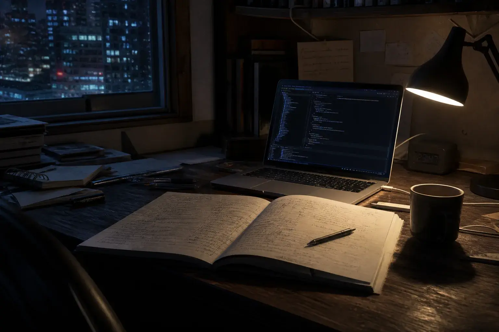

Worklog Blueprintワークログ・インサイトの有料オプション（開発中）
自社の計画は、
自社で書く。
AIと、社員で。
ワークログ・インサイトに貯まった1分ごとの業務の記録から、AIが業務改善計画書の素案を書きます。現状から工程、外部に確認したいことまでの6章。仕上げるのは、その仕事を毎日している御社の社員です。
運営：株式会社ライトアップ（東証グロース：6580）
- 第1章記録された業務時間は合計4,812時間根拠：全部署の記録
- 第2章見積の転記に週18.5時間。同じ数字を2回入力根拠：営業部・パソコン3台
- 第3章見積から販売管理へ、転記を自動にする
- 第4章転記を週18.5時間から
週5時間週7時間へ（推定）営業部の確認で修正
社員が仕上げ中
- 1分ごとインサイトの実測記録が材料
- 6章計画書の素案の構成（予定）
- 0件社員が新しく入力する作業
- 全記述根拠の期間と部署を表示（予定）

生成イメージ01In the news
行政でも、計画書を
AIで内製する動きが
出てきました。
- 大阪府河内長野市の市長が、生成AIを使って職員が主体で行政計画をつくる「脱コンサル」を表明
- 対象は2027年度以降に策定を始める行政計画。基礎調査・データ整理・骨子と素案づくりを、職員が担える範囲を増やす
- 高度な助言や客観的な検証が要る分野は、引き続き外部の専門家の知見を使う
では、社員数十人の会社では、どうでしょうか。
02What was missing
社員数十人の会社に
足りないのは、AIではなく
自社の仕事の事実です。
計画書の文章は、AIに書かせられるようになりました。ただ、渡す材料がなければ、どの会社にも当てはまる一般論が返ってきます。外部に頼んだ場合も、まずはヒアリングや資料集め、業務の洗い出しといった現状の調査から始まります。
聞いて集める
- 担当者へのヒアリング
- 自己申告の工数表
- 記憶に頼った業務の洗い出し
記録から読む
- 1分ごとの実測の記録
- 部署・業務ごとの時間
- 繰り返しと偏りの検出
03How it works
その事実は、インサイトに
1分ごとに貯まっています。
ワークログ・インサイトは、社員のパソコン画面を1分に1回記録し、AIが「どの業務に何時間かかっているか」を分析するサービスです。ブループリントは、その記録をもう一度読み直し、計画書の形に書き起こすオプションです。
- インサイト記録する1分に1回、画面を記録
- AI読み直す期間と部署を決めて集計
- AI素案を書く6章、根拠つき
- 御社の社員仕上げる直す・決める・始める
- 必要なときだけ外の目を借りる専門家に確かめてもらう
記録は自動なので、計画書のために社員が新しく入力する作業はありません。
04Inside the plan
だから、計画書の素案までは
社内でつくれます。
素案は6つの章でできています。AIが書くのは、記録から言えることまでです。
- 現状部署別・業務別の実測時間。ヒアリングではなく、記録から書きます。
- 課題繰り返している作業、特定の人への偏り、時期による集中。
- 施策AIツールだけでなく、研修・配置の見直し・外注まで並べて比べます。
- 目標課題ごとに、減らせる時間の見込みを書きます。
- 工程1か月目・3か月目・6か月目に、何をするか。
- 外部に確認したいこと社外の判断が要る点を、最後にまとめて書き出します。
素案を書くときの決まり（開発中の仕様です）
- すべての記述に、根拠になった記録の期間と部署を付けます
- 既定では個人名を出さず、部署と業務の単位で書きます
- 見込みの数字には「推定」と書き、約束の数字にしません
05Who finishes it
仕上げるのは、
御社の社員です。
どの施策なら現場が回るか。誰に任せ、いつ始めるか。その答えは、記録には書いてありません。決められるのは、毎日その仕事をしている御社の社員です。
素案に赤を入れ、言葉を直し、順番を入れ替える。そうして仕上げた計画は、外から届いた資料ではなく、自分たちの計画になります。次に計画を立てるときも、その手応えが社内に残ります。
- Fact現状は、記録で知る。
- Draft素案は、AIに書かせる。
- Decide決めるのは、自分たちだ。
ここからは、外注との違いと、始め方の話です。
06Compared with outsourcing
外に頼むのは、
「外の目」が要る所だけです。
計画づくりを丸ごと外に出す方法、社内で一から書く方法と並べました。ブループリントにも、弱い所があります。
| 比べる点 | 外部に一括委託 | 社内で一から作成 | ブルー |
|---|---|---|---|
| 現状の把握 | 聞き取りと資料 | 担当者が調べる | 1分ごとの画面記録 |
| 計画の起草 | 委託先が作成 | 担当者が作成 | AIが素案を作成 |
| 手直し | 修正依頼が往復 | 自由に直せる | 社員が直接直す |
| 社内に残る物 | 納品された資料 | 担当者の経験 | 根拠つきの計画 |
| 第三者の目 | 取り入れやすい | 入りにくい | 入りにくい |
| かかるもの | 委託費用 | 担当者の時間 | 利用料と仕上げ時間 |
当社の整理です。委託先や社内の体制、使えるデータによって変わります。「第三者の目」は、社外の人による確認を指します。青は読み手に有利な点、赤は不利な点です。
外の目が要る所は、
素案の第6章にまとまります。
何を頼むかを決めてから、
専門家に相談できます。
07How to start
インサイトの記録が
貯まっていれば始められます。
材料はインサイトの記録です。新しい調査は要りません。導入相談では、どの部署の、どの期間の記録で書くかを決めます。最初の1本は、直近の記録から書くのがおすすめです。
対象
ワークログ・インサイトをご利用の会社が対象です。インサイトは月額1万円／1IDで、Windowsのパソコンのみに対応しています。記録を材料にするため、ブループリント単体ではお使いいただけません。
料金と時期
ブループリントは開発中です。料金は、計画書の範囲（部署の数と期間）に応じてお見積りでお伝えします。消費税の扱いと提供開始の時期も、お見積りであわせてお伝えします。
Q&AQuestions
導入の前に、
確かめておきたいこと
外部のコンサルタントは、要らなくなりますか。
いいえ。客観的な検証や、専門分野の判断が要る所は、外部の専門家に見てもらうほうが確かです。ブループリントが置き換えるのは、現状の調査と素案づくりの部分です。素案の第6章に「外部に確認したいこと」を書き出すので、何を頼むかが絞れます。
計画書に、社員の名前は出ますか。
既定では個人名を出さず、部署と業務の単位で書く予定です。記録の画像は、管理者でも開けない設定にできます。記録の範囲や見られる人は、インサイトの導入時に決めたルールに従います。
AIの書いた内容が間違っていたら、どうなりますか。
すべての記述に、根拠になった記録の期間と部署が付いているので、社内で確かめられます。お渡しするのは素案で、社内で確認してから使うことを前提にしています。
どんな計画書をつくれますか。
業務改善の計画が基本です。ほかの形式の計画書に使いたい場合は、導入相談でご相談ください。
NextWrite it ourselves
来期の計画は、
自分たちの手で
書きましょう。
まずは直近の記録で、1本。どの部署の、どの期間で書くかから、一緒に決めましょう。
導入の相談をするワークログ・インサイトの有料オプションです（開発中）